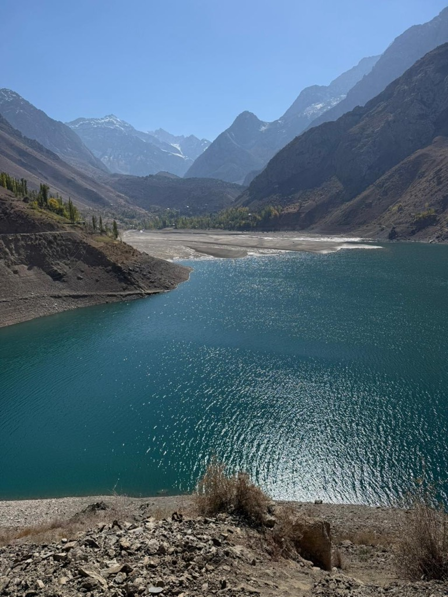

Location and altitude
Location: Upper Shing Valley, final lake of the cascade.
Altitude: around 2330-2400 m.
Altitudes are shown as approximate because small differences appear across travel sources.
Seven Lakes by lake • Hazorchashma
Hazorchashma finishes the Seven Lakes route and usually feels like the climax of the whole trip: higher, calmer and visually more open than the lower lakes.

The name is often associated with the idea of a thousand springs. The content should emphasize altitude, the final position of the lake and the changing feeling of space on the upper route.
Location: Upper Shing Valley, final lake of the cascade.
Altitude: around 2330-2400 m.
Altitudes are shown as approximate because small differences appear across travel sources.
The name is often associated with the idea of a thousand springs. The content should emphasize altitude, the final position of the lake and the changing feeling of space on the upper route.
After Hazorchashma the route loops back conceptually to the full guide and to the page explaining how the whole day is planned.
This page should help not only with lake-specific search intent, but also with planning the full Haft Kul route.
After Hazorchashma the route loops back conceptually to the full guide and to the page explaining how the whole day is planned.